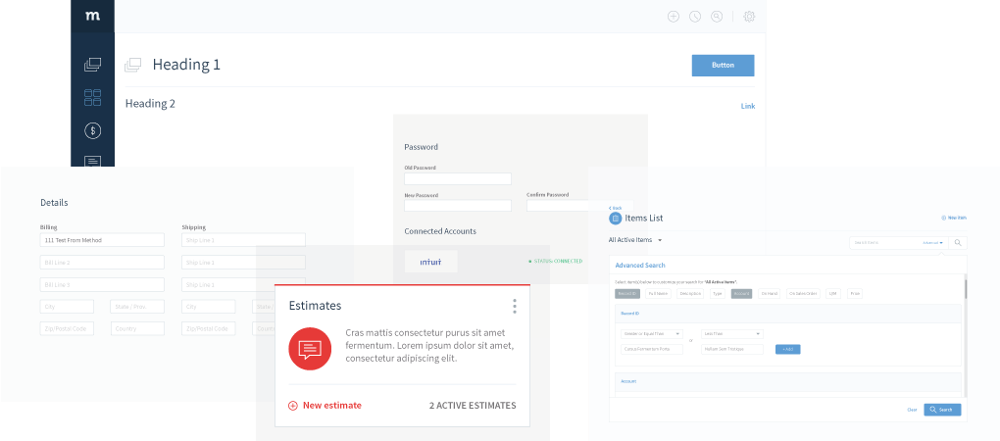

Method Is A Playground
Method is a playground With a lot of pieces to build things

- 1. Understand sandbox
- The main Method shell provides a sandbox for solvilng customer problems. The groups of elements themselves also provide the items to use within that sandbox, our job is to create new combinations of tools that solve customer problems.
- 2. Approach design last: don’t build too big a design library.
- It’s costly and prolongs the feature and function shipping process to add new items to the library. The novel design we encourage with Method is that you can build *anything, like lego blocks. But we want to limit the number of blocks to provide consistancy internally, as well as externally for the limitless customization we provide our customers. So we have a “build first and design last” approach. If you can find a set of tools that work together, use them.